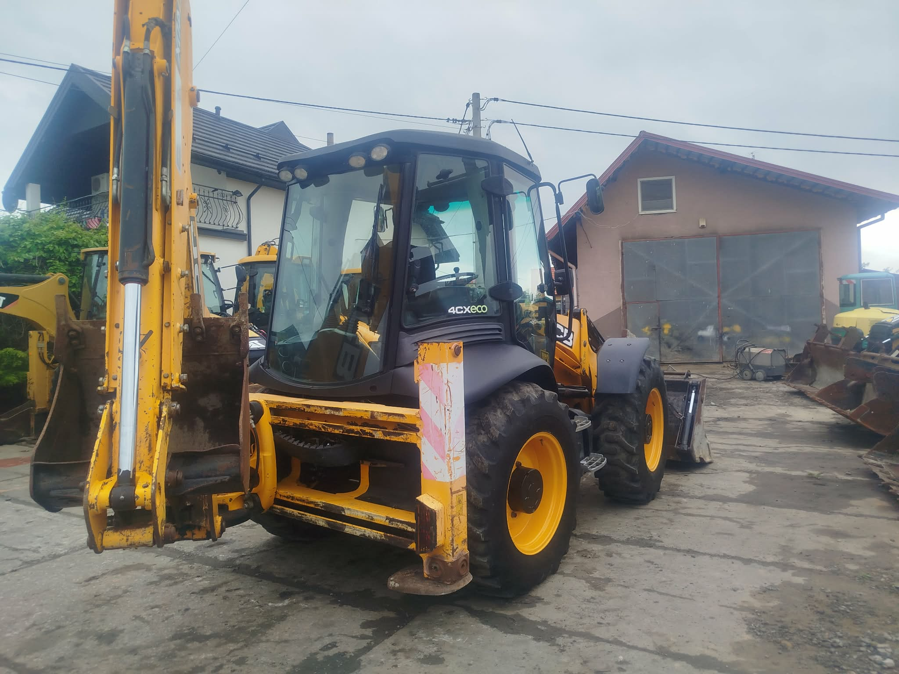
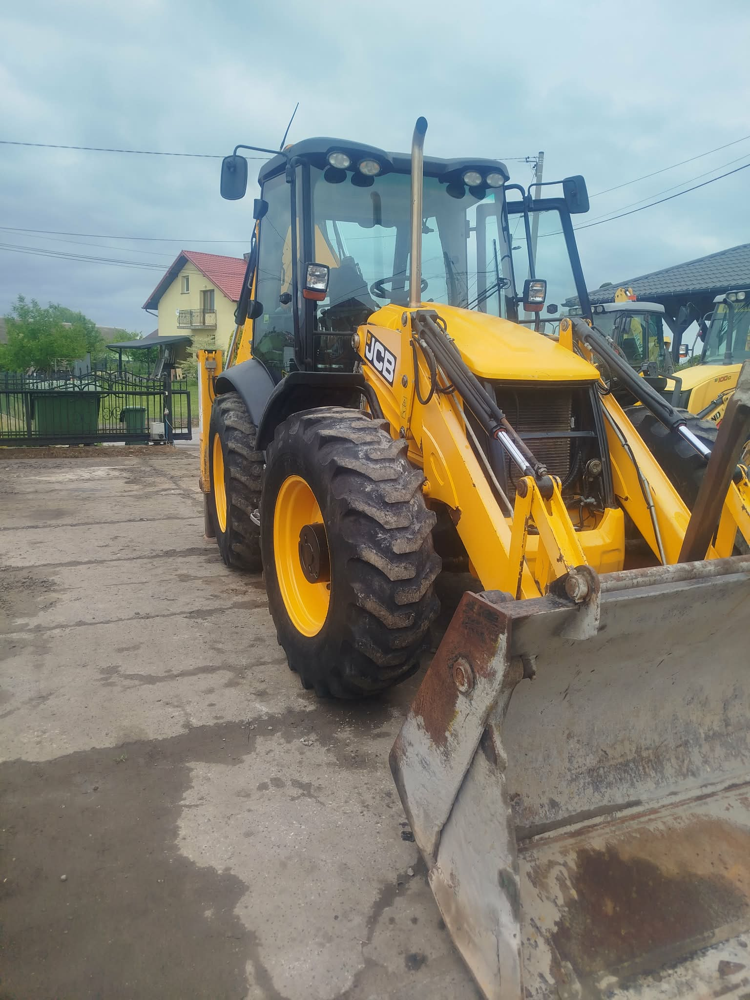
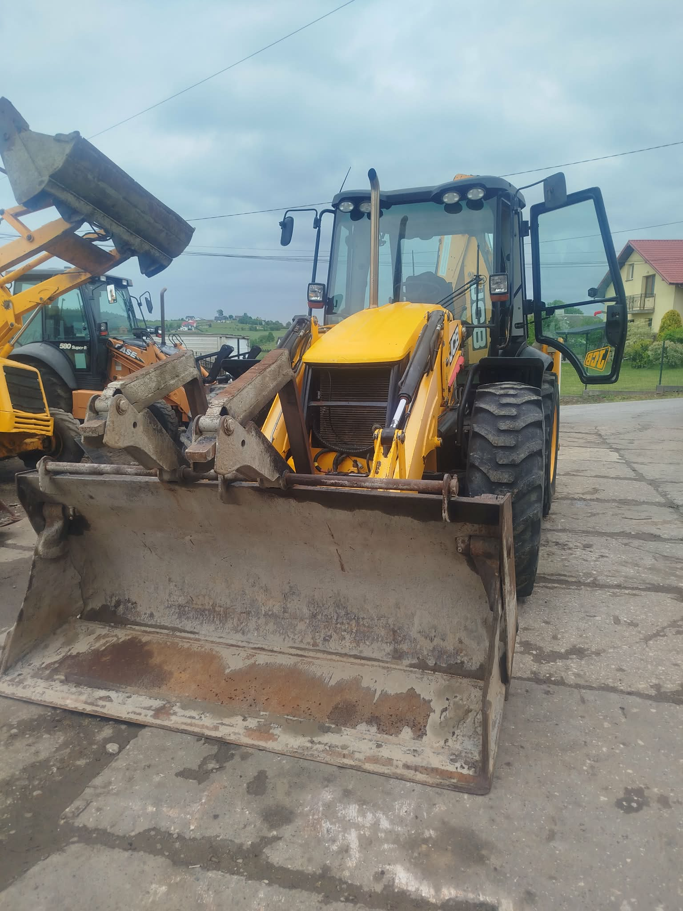
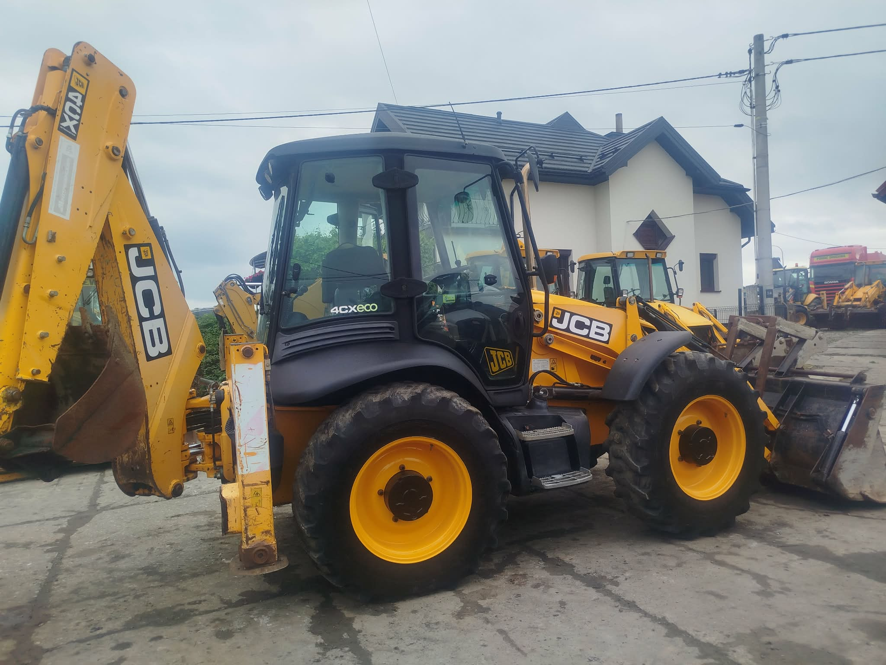

WYKOPY
Wykopy pod fundamenty, przyłącza, szamba i inne prace ziemne.
Jan Kowalski – Usługi Budowlane
JCB 4CX – MOC, PRECYZJA, NIEZAWODNOŚĆ
Profesjonalne usługi koparko-ładowarką na terenie Twojej okolicy. Szybko, solidnie i w atrakcyjnych cenach.
Wieloletnie doświadczenie w branży budowlanej
Koparko-ładowarka JCB 4CX eco
Działamy szybko i niezawodnie
Obsługuję klientów z Twojej okolicy


Wykopy pod fundamenty, przyłącza, szamba i inne prace ziemne.
Równanie, niwelacja i profilowanie terenu pod zabudowę lub zieleniec.

Załadunek materiałów sypkich oraz transport wywrotką na miejsce docelowe.

Rozbiórki, korytowanie, odwodnienia i wiele innych prac budowlanych.
Skontaktuj się ze mną i uzyskaj bezpłatną wycenę
Kraków i okolice
(w promieniu 50 km)
Pon–Pt: 7:00–18:00
Sobota: 8:00–14:00